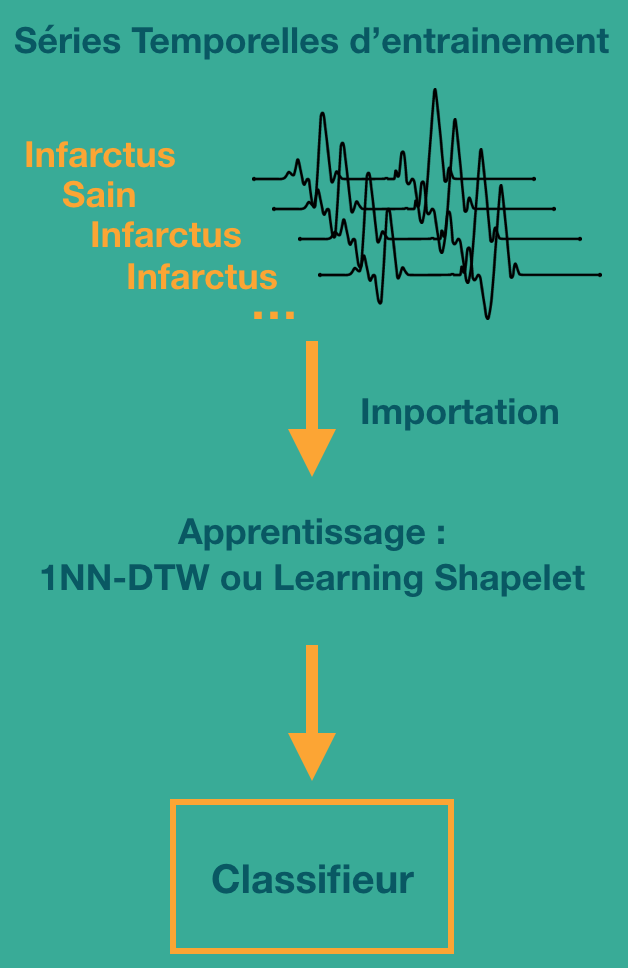
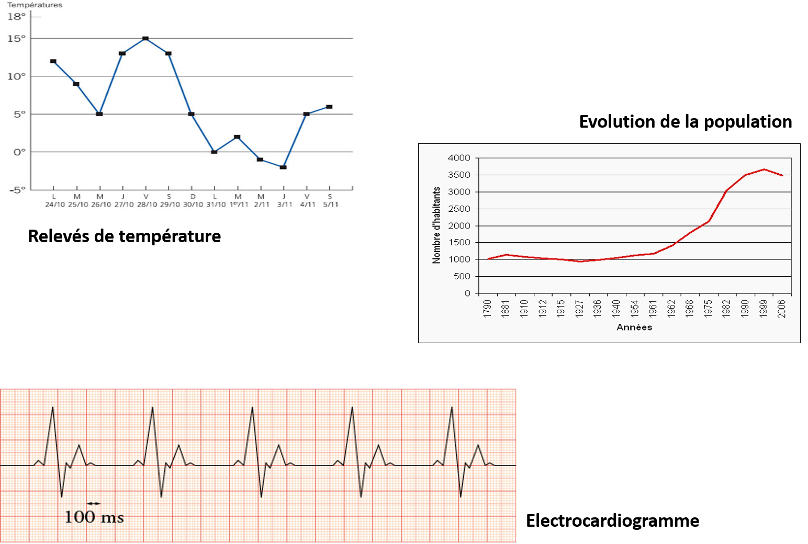
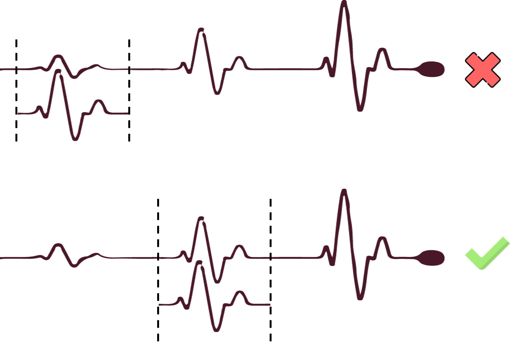
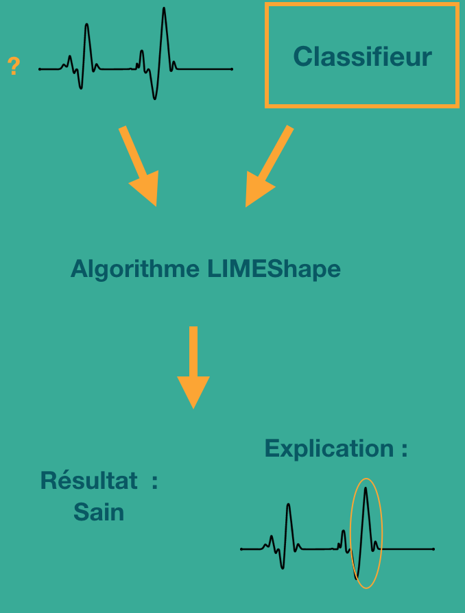

Les fonctionnalités de TSExplanation
TSExplanation permet d'entrainer un classifieur à partir de données d'entrainement constitué de séries temporelles. L'outil permet également de le sauvegarder afin de l'utiliser ultérieurement.
 L'outil possède une interface graphique permet à l'utilisateur de visualiser des séries temporelles.
L'outil possède une interface graphique permet à l'utilisateur de visualiser des séries temporelles.
L'interface graphique de TSExplanation permet de sélectionner une série temporelle et une Shapelet particulière et de visualiser la distance entre ces deux éléments.
 L'outil peut classifier une série temprelle et justifier graphiquement son choix de classification.
L'outil peut classifier une série temprelle et justifier graphiquement son choix de classification.
Entrainer et sauvegarder un classifieur de séries temporelles
Pour rappel en apprentissage supervisé, le but consiste à récupérer des données annotées, c'est à dire avec un label, et d'entrainer un modèle (classifieur) dessus afin que ce classifieur puisse prédire le label d'une nouvelle donnée non annotée. Il existe plusieurs type de classifieur (KNN, Random Forest, Réseau de Neurones...). Dans notre cas, l'utilisateur aura la possibilité d'importer le jeu de série temporelles d'entrainement via deux méthodes :
- Importation via un fichier texte
- Importation d'un jeu de donnée présent sur le site TimeSeriesClassification
Une fois les données importées, l'utilsateur aura le choix entre deux classifieur :
- 1NN-DTW : Grace à l'algorithme DTW, le classifieur va calculer la distance entre la série temporelle à classer et les séries d'entrainement. Il va garder le label de la série la plus proche (1er voisin)
- Learning Shapelet : Ce classifieur plus complexe se base sur des sous-séries temporelles caractéristiques des différentes classes. Ces sous-séries, appelés Shapelets, va permettre la classication de la série temporelle.
L'utilisateur pourra alors sauvegarder ce classifieur dans un fichier afin de le réutiliser.

Afficher une série temporelle
Une série temporelle est une suite de valeurs mesurées au cours du temps durant une certaine durée. Cette durée peut varier ainsi que l'intervalle de temps entre chaque mesure. De telles données peuvent être représentées sous forme graphique pour les rendre plus lisibles par un humain.
L'outil TSExplanation possède une interface graphique pour faciliter le travail de l'utilisateur et rendre l'interaction entre l'outil et l'humain plus visuelle. Ainsi, l'utilisateur a la possibilité d'afficher à l'écran n'importe quelle série temporelle sous forme de graphique.

Afficher la distance entre une Shapelet et une série temporelle
L'interface graphique de TSExplanation permet également à l'utilisateur d'afficher une série temporelle ainsi qu'une Shapelet quelconque et de visualiser la distance minimale entre ces deux éléments. L'utilisateur peut ainsi connaitre la partie de la série temporelle qui ressemble le plus à la Shapelet. Il peut alors déterminer par lui-même, visuellement, si la Shapelet peut être considérée comme étant présente dans la série temporelle ou non.

Classifier une série temporelle et afficher l'explication de la classification
C'est la principal fonctionnalité de notre outil TSExplanation. L'utilisateur va pouvoir classifier une nouvelle série temporelle et avoir l'explication de cette classification. Pour cela il va donner à TSExplanation une série temporelles non étiqueté et un classifieur déja entrainé.
L'outil va alors lui donner la classification de la série et son explication. L'explication sera donnée sous forme graphique. Les parties de la série temporelle qui ont le plus contribuées à la classifiction seront mises en avant. Les parties qui, au contraire, ont contribuées le moins seront plus effacées. L'utilisateur jugera alors du résultat et pourra avoir confiance, ou non, au classifieur.
Pour effectuer ce travail, TSExplanation utilise l'algorithme LIMEShape. Cette algorithme se base sur celui de LIME. LIMEShape est l'adaptation de LIME aux séries temporelles
